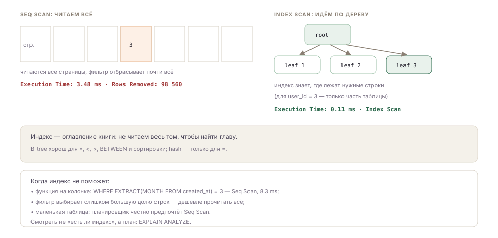

Индексы и EXPLAIN: где на самом деле тормозит запрос Индекс — не «ускорение по кнопке», а другой способ добраться до строк
Добавить индекс и надеяться — плохая стратегия. Нужно уметь читать план: какие таблицы читаются, сколько строк отбрасывается, сколько времени занимает каждый шаг. Тогда видно, где реальная проблема, а где она только чудится.
Словарь главы — если забыли термины
- Seq Scan
- Последовательное чтение всей таблицы; нормально для маленьких таблиц.
- Index Scan
- Чтение по индексу: находим нужные строки, не просматривая всё.
- Bitmap Heap Scan
- Сначала карта страниц по индексу, потом чтение страниц пачкой.
- cost
- Оценка планировщика; не миллисекунды, а единицы для сравнения планов.
- селективность
- Доля строк, проходящих фильтр: чем меньше, тем выгоднее индекс.
- EXPLAIN ANALYZE
- Выполняет запрос и показывает реальное время и строки.
01Зачем это backend-разработчику
- Запросы «внезапно» замедляются после роста таблицы — или не используют созданный индекс.
- EXPLAIN показывает правду: где Seq Scan на 100 000 строк, а где Index Scan на 1 440.
- ORM не спасает: N+1 запросы и лишние сортировки видны только в плане.
- Собеседование: «как понять, почему запрос медленный», «какие типы индексов», «что такое B-tree».
02Ассоциация-якорь: оглавление книги
Индекс — оглавление книги. Без него, чтобы найти главу, приходится листать весь том (Seq Scan). С ним вы идёте по оглавлению к нужной странице (Index Scan) — быстро, но только если ищете по тому, что в оглавлении есть.
Не всякая книга нуждается в оглавлении, и не всякий запрос — в индексе. Планировщик решает по статистике: иногда листать 10 страниц быстрее, чем открывать оглавление.
03Ассоциативный ряд: восемь звеньев
- Seq Scanчитаем всю таблицу
- Index Scanидём по индексу
- Bitmapсначала карта страниц
- Hash Joinсоединение через хеш
- Nested Loopвложенный перебор
- costоценка планировщика
- actual timeреальное время
- rowsоценка против факта
04Схема: два способа добраться до строк

05Как это устроено на самом деле
EXPLAIN и EXPLAIN ANALYZE
EXPLAIN показывает план и оценку стоимости, не выполняя запрос.
EXPLAIN ANALYZE действительно выполняет запрос и добавляет реальные
actual time и rows. Первое безопасно на проде,
второе — нет (запрос реально выполнится).
| Строка плана | Что значит |
|---|---|
| Seq Scan on t | последовательное чтение всей таблицы |
| Index Scan using idx | чтение по индексу |
| Bitmap Heap Scan | сначала bitmap по индексу, потом страницы таблицы |
| Hash Join | строит хеш по меньшей таблице и ищет по нему |
| Nested Loop | для каждой строки внешней таблицы ищет по индексу |
| cost=0.29..57.99 | оценка: стартовая и полная стоимость |
| rows=1435 | сколько строк ожидает планировщик |
| actual time=0.010..0.075 | реальное время до первой/последней строки, мс |
| rows=1440 | сколько строк реально получено |
Индекс работает для «того, что в оглавлении»
B-tree хорош для =, <, >,
BETWEEN и сортировки. Но WHERE EXTRACT(MONTH FROM created_at) = 3
сравнивает результат функции, а не колонку — обычный индекс на created_at
тут не подходит. Помогает переписать в диапазон дат или создать функциональный индекс.
Селективность и «маленькая таблица»
Селективность — доля строк, которые проходят фильтр: 1% селективнее, чем 20%. Чем меньше доля, тем выгоднее индекс.
Планировщик выбирает Seq Scan, если фильтр пропускает большую долю строк: читать всё подряд
дешевле, чем прыгать по индексу. На таблице из 10 строк Seq Scan — нормальное решение, а не ошибка.
Статистика обновляется командой ANALYZE.
Индекс не бесплатен
Каждый индекс замедляет INSERT/UPDATE и занимает место.
Композитный индекс (user_id, created_at) работает и для фильтра по
user_id (левая колонка), и для пары. Индекс по created_at
не поможет запросу только по user_id.
06Лаборатория: запустить и увидеть
Фрагменты файла 24_indexes_explain.sql.
Для наглядности создадим orders_big на 100 000 строк — на маленькой
orders планировщик честно выберет Seq Scan.
Шаг 1. EXPLAIN без индекса
CREATE TABLE orders_big AS
SELECT gs AS id,
(gs % 5) + 1 AS user_id,
(gs % 6) + 1 AS product_id,
(gs % 3) + 1 AS quantity,
timestamp '2024-01-01' + (gs || ' minutes')::interval AS created_at
FROM generate_series(1, 100000) AS gs;
ALTER TABLE orders_big ADD PRIMARY KEY (id);
ANALYZE orders_big;
EXPLAIN ANALYZE SELECT * FROM orders_big WHERE user_id = 3;
Прочитаны все 100 000 строк, 80 000 отброшены фильтром. Оценка rows=19647 близка к факту 20000 — статистика в порядке.
Шаг 2. Индекс по user_id
CREATE INDEX idx_orders_big_user ON orders_big(user_id); ANALYZE orders_big; EXPLAIN ANALYZE SELECT * FROM orders_big WHERE user_id = 3;
Планировщик выбрал Bitmap Heap Scan: 20% строк — заметная доля, и сначала собрать карту страниц, а потом читать их пачкой эффективнее, чем прыгать по одной. Разница меньше, чем кажется, потому что фильтр не очень селективен.
Шаг 3. Индекс по created_at: узкий диапазон
CREATE INDEX idx_orders_big_created ON orders_big(created_at); ANALYZE orders_big; EXPLAIN ANALYZE SELECT * FROM orders_big WHERE created_at >= '2024-01-02' AND created_at < '2024-01-03';
Узкий фильтр (примерно 1,4% строк) — идеальный случай для индекса: 0.108 мс против 3.78 мс у Seq Scan.
Шаг 4. Функция на колонке ломает индекс
EXPLAIN ANALYZE SELECT * FROM orders_big WHERE EXTRACT(MONTH FROM created_at) = 3;
Индекс на created_at уже создан, но не используется: планировщик не может
применить его к результату функции. Оценка rows=500 сильно занижена (факт 13601) — тоже сигнал.
Шаг 5. План соединения на маленькой базе
EXPLAIN SELECT o.id, u.name, p.name FROM orders o JOIN users u ON u.id = o.user_id JOIN products p ON p.id = o.product_id WHERE u.city = 'Москва';
Порядок в плане — снизу вверх: два Seq Scan, Hash Join, затем для каждой строки — Index Scan
по первичному ключу products. Даже на пяти строках планировщик использует индекс
products_pkey.
07Мост: где это живёт в приложении
-- включить реальные планы для медленных запросов ALTER DATABASE learning_shop SET log_min_duration_statement = 500; -- какие индексы уже есть SELECT indexname, indexdef FROM pg_indexes WHERE tablename = 'orders_big'; -- как часто используется индекс SELECT relname, seq_scan, idx_scan FROM pg_stat_user_tables;
В ORM та же история: .where(...) превращается в SQL, и только EXPLAIN
покажет, использовался ли индекс. В pandas аналог индекса — индекс DataFrame
(set_index), но он ускоряет выборки по метке, а не влияет на план SQL;
это разные механики с одной идеей «найти нужное быстро».
08Шесть ошибок, на которых спотыкаются
WHERE EXTRACT(MONTH FROM created_at) = 3 отключает обычный индекс.
На 10–100 строках Seq Scan быстрее — это правильное решение планировщика.
Каждый индекс замедляет вставку и обновление, занимает место.
(created_at, user_id) не заменит (user_id, created_at) для фильтра по user_id.
Запрос реально выполняется — можно нагрузить базу.
Планировщик выбирает неудачный план из-за устаревшей статистики.
ANALYZE таблицы; проверить коррелированность колонок.09Вопросы с собеседования
Чем EXPLAIN отличается от EXPLAIN ANALYZE?
EXPLAIN показывает план и оценку, не выполняя запрос. EXPLAIN ANALYZE выполняет и добавляет реальные времена и строки.
Seq Scan или Index Scan — что быстрее?
Зависит от доли строк: на маленькой таблице или широком фильтре Seq Scan быстрее; на узком — индекс.
Что такое B-tree и для чего он?
Сбалансированное дерево поиска. Поддерживает =, <, >, BETWEEN, сортировку; стандартный тип индекса в PostgreSQL.
Почему индекс не используется?
Функция на колонке, несоответствие типа, низкая селективность, маленькая таблица, устаревшая статистика или другой индекс оказался дешевле.
Что такое композитный индекс?
Индекс по нескольким колонкам. Работает для фильтров по левой колонке и по префиксу, но не по правой в одиночку.
Почему много индексов — плохо?
Каждый индекс нужно обновлять при записи, он занимает диск и может сбивать планировщик.
Что означает cost в плане?
Условная стоимость: стартовая и полная. Она не в миллисекундах — это внутренние единицы, по которым планировщик сравнивает варианты.
Как найти медленные запросы?
log_min_duration_statement, pg_stat_statements, EXPLAIN ANALYZE для подозрительных запросов.
10Три задачи: сначала своя попытка
01 Переписать месяц
Перепишите EXTRACT(MONTH FROM created_at) = 3 так, чтобы использовался индекс по created_at.
Показать решение
SELECT * FROM orders_big WHERE created_at >= '2024-03-01' AND created_at < '2024-04-01';
Что важно. Индекс видит диапазон, а не функцию. Полуоткрытый интервал безопаснее
BETWEEN для последнего дня месяца.
02 Композитный индекс
Запрос фильтрует по user_id и сортирует по created_at. Какой индекс создать?
Показать решение
CREATE INDEX idx_orders_big_user_created
ON orders_big (user_id, created_at);
Что важно. Сначала колонка фильтра, потом сортировки — тогда индекс закрывает и то, и другое.
03 Прочитать план
В плане: Seq Scan ... Rows Removed by Filter: 86399. Что это значит и что делать?
Показать ответ
Прочитаны все строки, почти все отброшены — фильтр не использует индекс (вероятно, функция на колонке). Нужно переписать условие в диапазон, создать функциональный индекс или проверить, что тип совпадает.